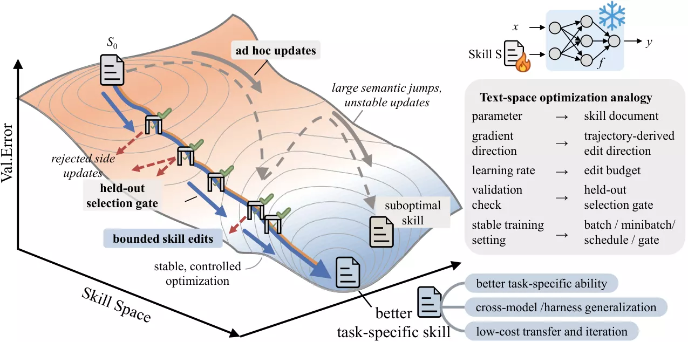

SkillOpt: Executive Strategy for Self-Evolving Agent Skills
A controllable text-space optimizer that trains reusable skills as external state for a frozen agent. Scored trajectories become bounded edits, and validation gates keep only changes that measurably improve behavior.
Best or tied-best in 52 / 52 settingsZero extra model calls at deployment
Research note
Problem. One-shot or loosely self-revised skills do not behave like reliable optimization.
Approach. SkillOpt adds a textual learning rate, rejected-edit memory, held-out validation, and epoch-wise slow/meta updates.
Result. It improves across six benchmarks, seven target models, and direct-chat, Codex, and Claude Code harnesses, with strong cross-model and cross-harness transfer.